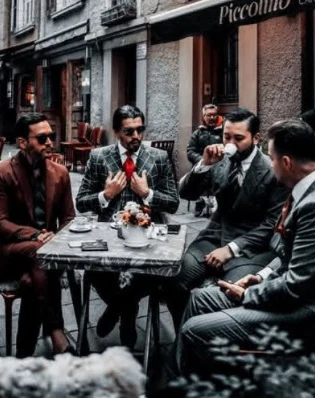
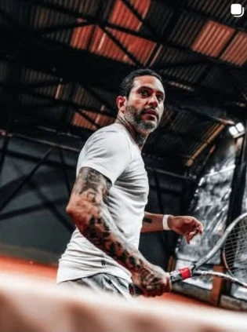
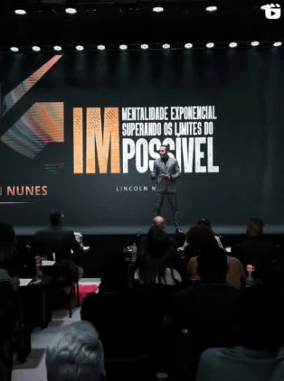
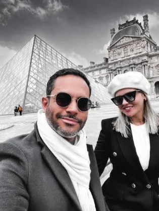
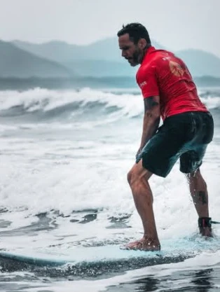
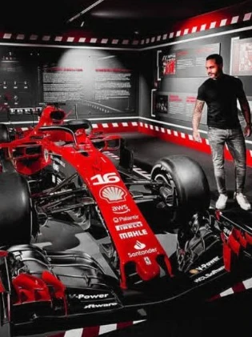
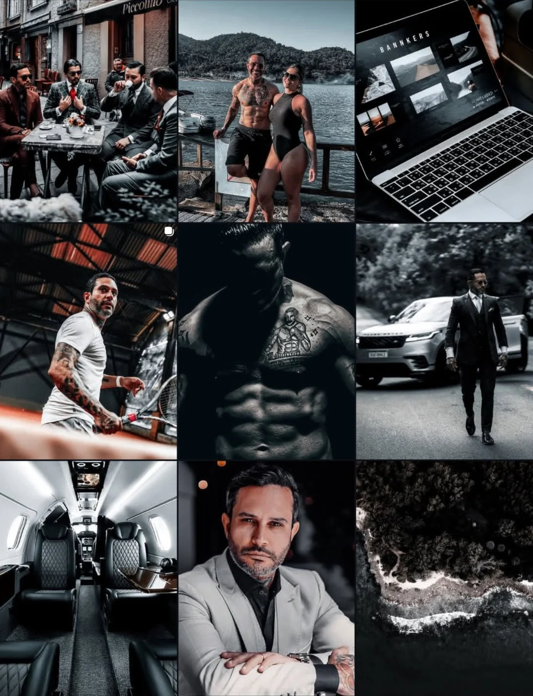
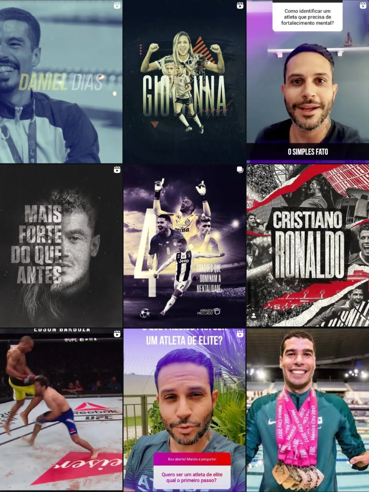

Diagnóstico
Leitura do posicionamento atual e da percepção desejada.
Uma imagem ganha sentido quando encontra uma lembrança de quem olha. No meu trabalho de branding, observo como você atende um cliente, conduz uma reunião e toma decisões. É desses gestos que saem as fotografias que ajudam o público a entender por que escolher você.
 A mente que habita o brandingConheça e adquira meu livro
A mente que habita o brandingConheça e adquira meu livroCada ambiente, gesto e decisão comunica algo sobre você. A fotografia cinematográfica transforma esses sinais em uma narrativa coerente de posicionamento empresarial.
em cinco dias, segundo resultado relatado pelo cliente.
Lincoln Nunes é mentor e preparador mental de jogadores de futebol que passaram pela Seleção Brasileira, entre eles Raphinha e Philippe Coutinho. Sandro Bello fotografou Lincoln em momentos de trabalho, viagens e lazer. As fotografias do perfil @lincolnn mostram como esses registros compuseram a narrativa visual do rebrand.















Leitura do posicionamento atual e da percepção desejada.
Construção de narrativa alinhada à sua identidade e ao seu negócio.
Registro cinematográfico da sua rotina, decisões e ambientes reais.
Seleção de imagens para comunicar consistência, presença e autoridade.
Sandro Bello é fotógrafo, pesquisador e estrategista de marca pessoal. Em mais de 20 anos de fotografia, desenvolveu um olhar para os gestos e ambientes que revelam como um empresário trabalha, decide e se relaciona. Tem formação em hipnose e PNL Master.
É CEO da Revista Players e da Talkers, agência de palestrantes que reúne Diógenes De Lucca, Tathiane Deândhela, Márcio Giacobelli e Theo Becker, entre outros nomes.
Ao longo da carreira, fotografou Paulo Vieira, Jordan Belfort, cuja história inspirou o filme O Lobo de Wall Street, Dilma Rousseff, Lula, Elaine Orives, Michel Teló e Andressa Mallinsk, entre outras personalidades.


Na matéria de capa da revista Players, Sandro fala sobre construção de empresas, estratégia de marca e os planos para o lançamento de seu segundo livro em 2027.

Antes de uma marca ser escolhida, ela é interpretada. Antes de uma decisão ser racionalizada, a percepção já começou a construir significados.
Neste livro, Sandro Bello explora a relação entre imagem, percepção, persuasão visual e comportamento humano nos negócios. Uma reflexão sobre como sinais, narrativas e experiências influenciam a leitura que as pessoas fazem de uma marca — e por que posicionamento não se resume ao que uma empresa diz, mas ao que o público entende, sente e recorda.
Uma obra sobre a dimensão invisível das decisões: aquilo que acontece na mente antes de se transformar em escolha.
A questão é se essa percepção está trabalhando a favor do seu negócio.
Solicitar diagnóstico de imagem